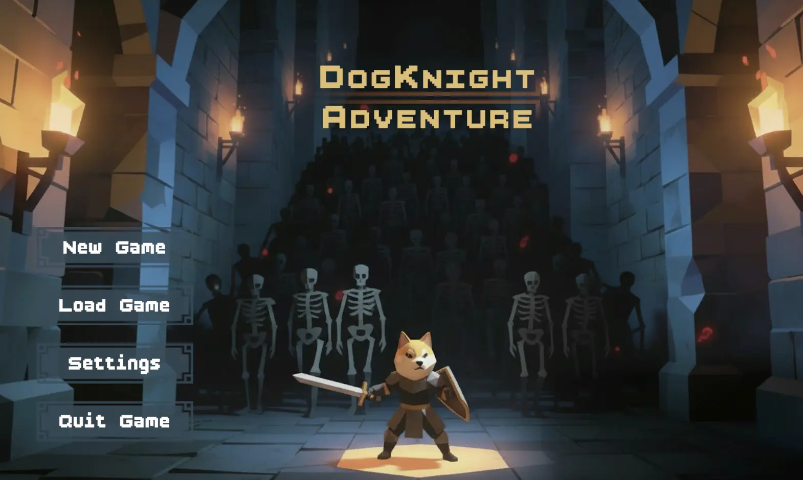

DogKnight
An action RPG made by a team of eight in Unity, with real-time combat, loot, cutscenes and music.
- Engine
- Unity
- Team
- Eight developers
- Process
- Agile, with GitHub and a Trello board
- My part
- Player combat, animations, cutscenes and music

The project
DogKnight was a group assignment: design and build a playable action role-playing game. It has real-time combat, enemy encounters, loot, an inventory system, cutscenes and music.
Each of the eight of us owned different parts of the game. But the project was also practice in working agile, so we worked a lot in each other's scripts and levels, and had to learn to merge our work cleanly through GitHub.
My part
I focused on player-related systems, combat, animations, cutscenes and music (not sound effects).
I implemented the player's attacks, enemy projectile interactions, the player character animations, a secondary attack system, skippable cutscenes, and background music for different parts of the game. That let me work on both how the game plays and how it feels.
Cutscenes and music
Cutscenes weren't on the board from the start, and neither was music. I added both after a lesson about how much a story matters: a game shouldn't just work, it needs a thread of lore that ties it together and pulls the player in.
Cutscenes were new to me, but not completely. I had just used Unity's Timeline in my spare-time rail shooter, recording movement, animations and camera work, and I brought that experience into this project.
How we worked
We used a Trello board. Anyone could come up with an idea and share it with the group, and if it was approved, write it up as a ticket.
Any ticket without a name on it was up for grabs, so you could pick something that suited you or something you wanted to learn. I added the music and cutscene tickets myself, because I wanted to make music and everyone agreed that both add to the immersion.